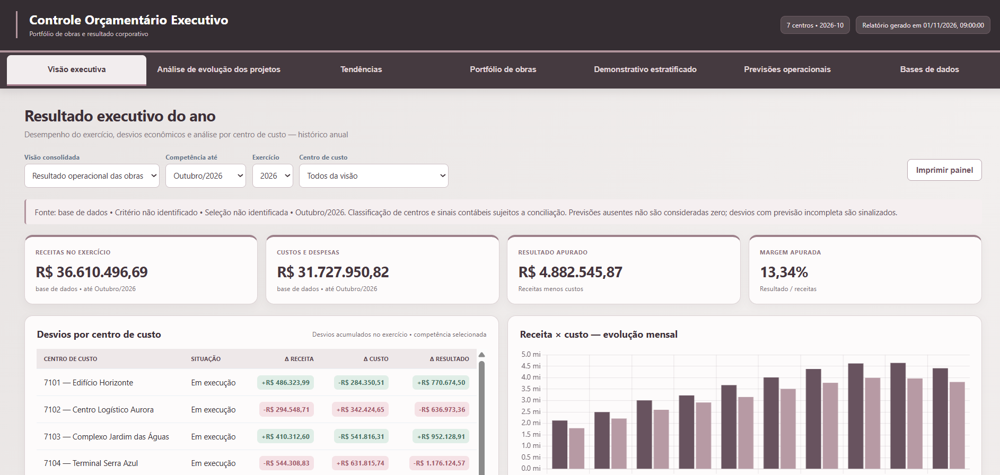

Diagnóstico
Entendimento do problema e avaliação de requisitos, preferencialmente com amostras fictícias.
Transformo controles manuais, informações dispersas e desafios de gestão em soluções digitais que simplificam rotinas e apoiam decisões empresariais.
Atendimento remoto · Projetos sob demanda · Parcerias B2B

Da melhoria de uma planilha à implantação de um controle gerencial personalizado. A tecnologia é escolhida conforme o problema.
Quatro demonstrações navegáveis e dez propostas conceituais de soluções sob demanda. Nenhum resultado financeiro é apresentado como comprovado.
As capas conceituais são ilustrações de interface, não sistemas já implantados. Demonstrações existentes devem ser utilizadas somente com autorização de seus titulares.
Processo estruturado, com escopo acordado e comunicação clara em cada etapa.
Entendimento do problema e avaliação de requisitos, preferencialmente com amostras fictícias.
Definição de escopo, entregáveis, prazo, investimento e condições.
Construção da solução, testes e validação conforme critérios acordados.
Disponibilização, orientações de uso e aceite. Suporte conforme contratação.
Sou Bruno Silva, engenheiro civil com experiência em gestão de custos, contratos, planejamento e coordenação técnica. Minha atuação conecta necessidades operacionais à visão gerencial, combinando análise de dados, automação e desenvolvimento de ferramentas.
Atendo demandas de empresas e escritórios e avalio parcerias técnicas com consultorias que precisem complementar sua capacidade de entrega.
O compartilhamento de dados sensíveis deve ser precedido de condições de confidencialidade acordadas. Sempre que possível, utilizo bases fictícias para desenvolvimento e avalio alternativas de processamento local.
O uso de ferramentas externas, acesso a dados pessoais e requisitos de segurança são definidos antes da execução.
Conte o que deseja melhorar na sua empresa. Vamos avaliar a melhor solução para o seu negócio e definir uma proposta personalizada. Não é necessário enviar dados confidenciais no primeiro contato.